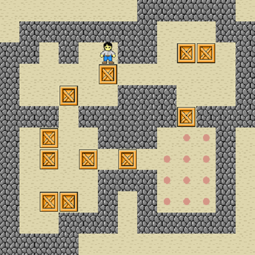
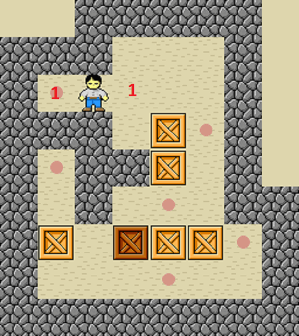
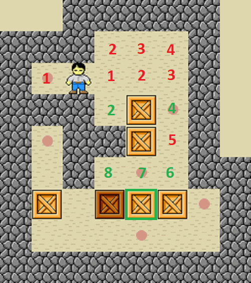
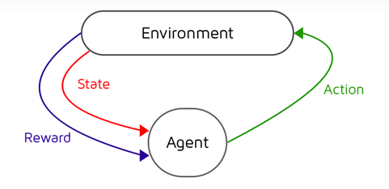

Sokoban AI
|
The Rules
|
 | |
|
When it comes to writing code that is going to be run thousands or even millions of times, like in the case of our pathfinding and move determination algorithms for Sokoban, we had to write them as efficiently as possible to reduce runtime. Because of this, a lot of time had to be devoted to optimizing existing algorithms that had already been written for our specific problem. |
||

For our path finding, we used a variant of the breadth-first search algorithm. The algorithm is used to find all reachable moves from the player's current position by checking all reachable locations a distance d from the starting location. The algorithm keeps checking further and further away until all reachable spaces have been explored and their distances recorded.

Once we've found all our possible moves and chosen which box to push, we use a backtracking search to find the path from the box to the players location. Since the distance of each location from the player is stored, we can work our way back from the box by taking steps that decrease our distance from the player, which also finds the shortest path back.

We use a markov decision process with Q-learning to determine which move we want to do next. Our Q-function finds the 'value' of being in each state and rewards the AI for making a good move, so the AI learns when it does well.
|
|

|

|